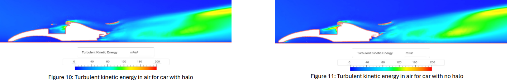
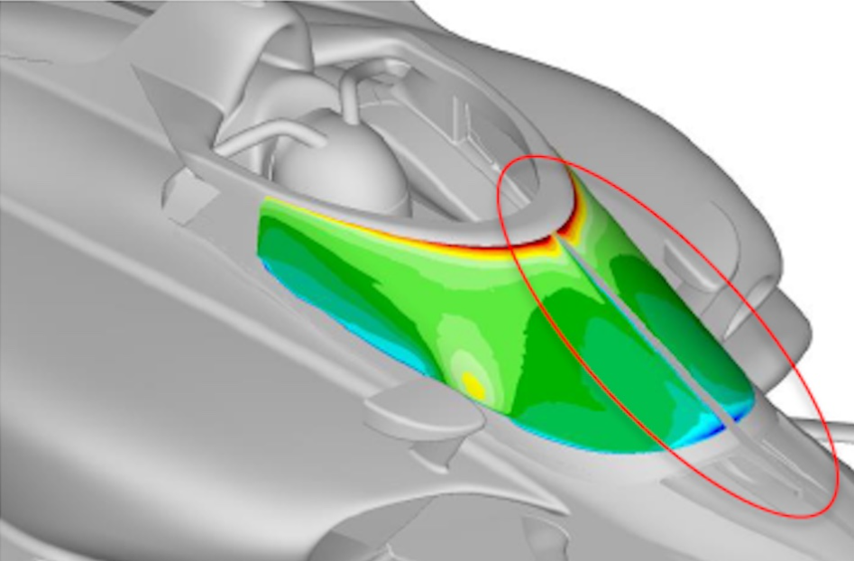
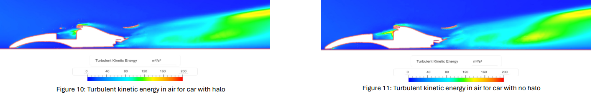
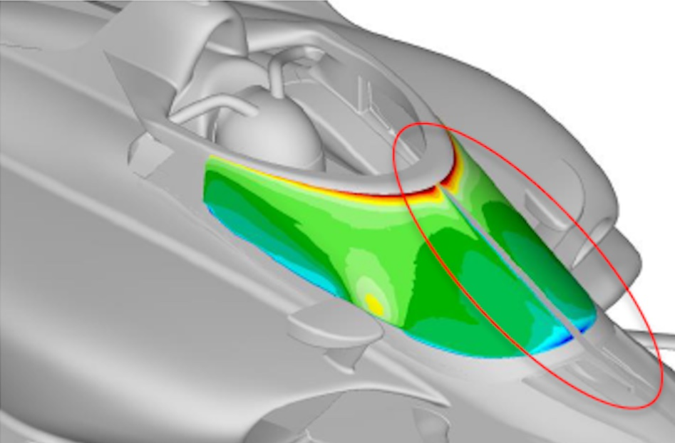

Analysis and Discussion ▼
Analysis and Discussion
The formula 1 halo was developed as a result from several accidents throughout the years of Formula One, Two main examples include Massa in 2009, Where during the Hungarian Grand Prix, Massa was trailing another car when a Spring came loose and flew out the back of the car and hit Felipe Massa causing a skull fracture, As well as Jules’s fatal crash in 2014, As a result of these two accidents, the FIA ,began research into the development of a safety device to protect the drivers.
In 2016, trials began of the halo testing various types and designs. First tested in March 2016 when Kimi Raikkonen tested it in Barcelona, and testing continued with redbull testing the aeroscreen in 2016 (F1, 2016, (n.a)) The fully enclosed cockpit wasn't brought out on track due to the testing results being unfavourable for driver safety when exiting the car. The same year, Ferrari and Redbull both began testing the Aeroscreen and Halo prototypes (F1, 2016 (n.a)) While the aeroscreen offered full frontal protection, it caused, glare, distortion and water accumulation, The halo although visually bulky, maintained a clear visibility and performed well in various testing, Despite early criticism from fans and teams, it received praise after the 2018 Spa GP. The FIA also tested the Halo in a test where a tyre acting as a projectile was launched into the early concept of the halo, Weighing 20kg, at 225kph. The feedback was positive as the halo only displaced a small amount and showed no signs of failing. (FIA, 2016)

Testing 40 incidents the halo provided a 17% theoretical survival increase using real life cases. (FIA, 2016)
CAD and FEA (D’Alessandro,Et al. (n.d), demonstrate that the halo causes minimal aerodynamic disturbance with little turbulence build up, This shows very little effect to the cars performance when comparing with the 2016 cars, When compared to the Aeroscreen using results from Indycar provided by Marshal Pruett on IndyCar pooling, The Aeroscreen showed results of more force and turbulence acting on the aeroscreen due to having a much larger drag coefficient then the halo. (Ref Img)
When analysing the CAD results for stress testing (Raikar, D. 2022), it shows how the Halo is able to withstand a magnitude of 125KN of force upfront. Diagram in the figures below where the halo is outlined it shows how the majority of the stress is put into the tri-split of the halo at an average stress of 1118.5MPa under a 116KN but displays the tiniest displacement showing only 1.233mm as stated by the website this is due to its high tensile strength. Later in his test he shows that during a collison at 320km/h only displaces a displacement of 12.3mm with a maximum stress of 29782MPa.
(Youtube (F1), 2018) At Spa, Leclerc was in front of drivers Alonso and Hulkenberg, Going into the first corner Hulkenberg missed his braking point and hit Fernando Alonso who as a result, went into the back and over Leclerc’s Sauber. Fernando's wheel hit the halo, causing the tyre to collapse and go over it, saving Leclerc's life by saving him from a fatal injury. As a result former criticiser Toto Wolf, called it 'Necessary’. In 2021, Lewis Hamilton collided with Max Verstappen resulting in Max’s wheel landing on Lewis’s halo and absorbing the blow saving his life. (Youtube (F1), 2021)
A year later saw F1’s worst accident, In 2020 during the Bahrain Grand Prix a accident caused Romain Grosjean to crash into the metal barrier, In the crash the car caught on fire, The Halo acted as a barrier and bent the metal barrier around it protecting Grosjean allowing him to get out the car with only minor burns. ESPN (n.a), 2020) In 2022, there were 2 disasters at the same grand prix. F2 driver Roy Nissany got involved in an accident where a car was launched into the air and collided with his halo. At the F1 race that same weekend, Zhou Guanyu flipped at the start of the grand prix and resulted in him flipping upwards of 6 times into the barrier, where, without the halo, he would have been killed. (Youtube, F1, 2022) Below, in a Pie chart, you'll see the exact percentage of drivers in the Formula series saved by the halo.
Since its introduction in 2018, the halo has redefined safety standards in Formula 1. Through a combination of vigorous testing with varying materials to meet the high-performance standards of Formula One, it has saved multiple lives and established a new benchmark for driver protection. The success of the halo, unfortunately, comes from dark roots, but it was necessary to show its value in the sport to save others' lives.
 


